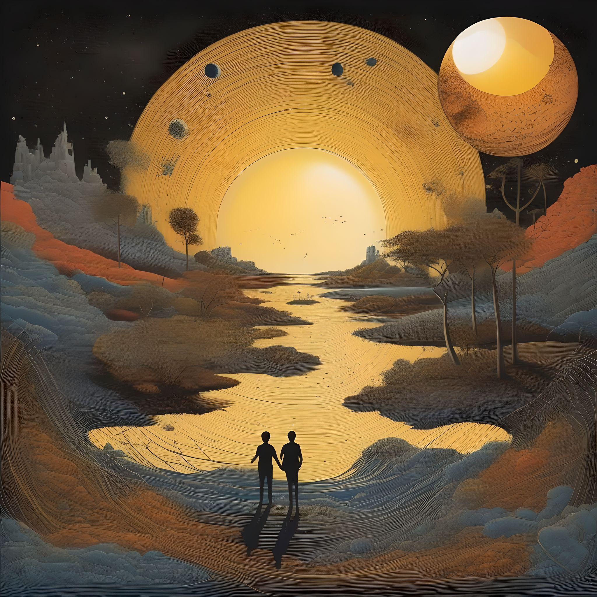

Рассвет
Глава 1
Глава 1
Каждый день мы сталкиваемся с многочисленными проблемами и препятствиями,
в том числе большими и маленькими, с которыми нам часто приходится сталкиваться,
когда мы начинаем свой день. Мы всегда пренебрегаем последствиями наших действий и тем,
как мы можем исправить ситуацию.
В прошлом, очень далеком от нашего, которое наступило задолго до создания самого времени
и отсчета лет. Первыми созданными существами были потомки Солнца вместе с потомками Луны,
оба человека имели свои собственные формы и способы действия и мышления. Дети Солнца сияли
интенсивно, неся свет своих предков, тогда как в детях Луны мы можем заметить всю нежность
и лунное сияние.
Но поскольку у них не было собственного света, они отражали яркость детей солнца, так что и
те и другие всегда жили вместе, вместе и в то же время порознь, потому что, пожалуй, самым интригующим
фактом в этой странной стране было то, что все всегда знали, что на самом деле две стороны одного мира
разделены барьером, который нельзя ни увидеть, ни потрогать, который начинается в центре земли и тянется
до самого дома небесных существ высоко в небе, И если кто-то осмелится прикоснуться к этому барьеру, гнев
небожителей немедленно обрушится на них, и они будут наказаны полным уничтожением своих жизней в тот же миг,
что разлучит их навсегда, поэтому, хотя эти существа были очень нужны друг другу, они никогда не обменивались
даже несколькими взглядами, не по плохой причине, а потому что у них не было выбора, кроме как уважать волю небожителей,
чтобы оставить обе стороны разделенными, так как они ничего не могли сделать, чтобы изменить это.
Но, видимо, есть те, кто всегда мыслит нестандартно, те,
кто всегда хочет найти другой способ сделать что-то,
а не просто смириться с тем, как это делают все остальные.
Так случилось, что однажды мы наткнулись на некоего потомка Солнца, который вполне мог бы вписаться в этот класс людей,
всегда живущих вне своего разума. Обычный парень, которого мы можем назвать Sunset, шел по улице, погруженный в свои мысли,
как вдруг наткнулся на любопытную сцену, когда девушка наблюдала за деревом и записывала все в свой простой блокнот.
Эта девушка была потомком Луны, точно, по ту сторону стены. Sunset был заинтригован и задумчив. Некоторое время он наблюдал
за происходящим, пока не понял, что девушка на самом деле следит за поведением птиц, живущих на этом дереве. Этот факт заинтриговал его,
ведь подобные сцены не так уж часто случались с существами того времени, и он поверил в это, когда понял, что наконец-то нашел человека,
который думает наперед так же хорошо, как и он сам.
Sunset подошел к стене и поприветствовал девушку красивой улыбкой, она, казалось, обрадовалась и ответила ему любезностью.]
В этот момент Sunset достал из кармана книжку, небольшой сборник стихов, выбрал понравившийся и показал ей,
она выглядела смущенной, тогда он указал на девушку, словно спрашивая, как ее зовут, на что она протянула блокнот с
написанным в нем именем. Sunset сталкивался с очень разными текстами песен с уникальными формами и линиями, пока не понял,
что на самом деле они написаны на совершенно разных языках.
Что же делать Sunset, чтобы узнать больше о девушке, которая привлекла его внимание? Может ли это быть знаком того, что небесные
существа действительно не хотели, чтобы они встретились? Может быть, это вторая стена, разделяющая их?
Заметив его растерянную реакцию на свой ответ, девушка поняла, что это два совершенно разных языка, что заставило ее на мгновение задуматься и привлечь его внимание. Sunset медленно наблюдал, как девушка указывает на себя, а затем указывает на лунный свет, отражающийся в луже воды на земле по другую сторону стены, и с его развитым интеллектом Sunset понял, что девушку зовут Moonlight, что заставило его указать на себя, а затем сделать знак, который, казалось, просил ее подождать его. Присмотревшись, они поняли, что солнце начинает исчезать за горизонтом, ведь они оба проговорили весь день, и тут Закат указал на себя, а затем на солнце, которое медленно опускалось за горизонт, и Мунлигт сразу понял, что его зовут Sunset, и с улыбкой узнал его. В том мире солнце и луна всходили только с двух сторон, соответствующих их детям, в то время как солнце всходило, а затем снова опускалось с той же стороны, луна делала то же самое. Каким-то образом небесные существа того мира в конце концов сделали так, что луна смогла хранить часть солнечного света, чтобы использовать его ночью, - уникальная и несколько необъяснимая особенность этой странно устроенной земли.
